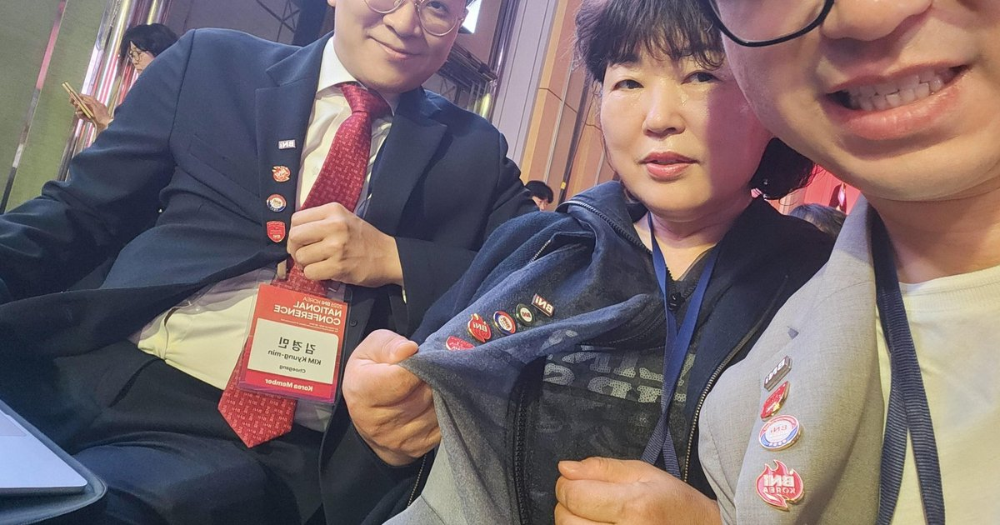

주간 정기 미팅
매주 정해진 시간에 모여 비즈니스를 소개하고 리퍼럴을 나눕니다. 꾸준한 참석으로 신뢰를 쌓습니다.
Business Network International
Givers Gain®(주는 자가 얻는다) 철학으로 운영되는
글로벌 비즈니스 네트워킹·리퍼럴 조직입니다.
BNI(Business Network International)는 1985년에 설립된 글로벌 비즈니스 네트워킹·비즈니스 소개(리퍼럴) 조직입니다.
핵심 가치인 Givers Gain® — 「주는 자가 얻는다」에 따라, 멤버들은 서로의 비즈니스를 키우는 데 도움을 주며 검증된 비즈니스 소개(리퍼럴)를 주고받습니다.
BNI의 공식 메시지: 세상이 비즈니스하는 방법을 바꿉니다®. 더 자세한 소개는 BNI Korea에서 볼 수 있습니다.
출처: BNI Korea
주간 미팅·리퍼럴·교육·업종 구조를 중심으로 비즈니스 성장을 돕습니다
매주 정해진 시간에 모여 비즈니스를 소개하고 리퍼럴을 나눕니다. 꾸준한 참석으로 신뢰를 쌓습니다.
멤버들은 검증된 비즈니스 소개를 주고받으며, 관계 기반의 새로운 기회를 만듭니다.
네트워킹, 발표, 사업 성장에 필요한 교육을 통해 사업 역량과 협업 역량을 키웁니다.
챕터에서는 전문분야별로 한 명의 사업가가 참여하는 구조를 지향합니다. 소개·협업이 겹치지 않도록 돕습니다.
멤버 간 1:1 미팅으로 서로의 비즈니스를 깊이 이해하고, 더 정확한 리퍼럴로 이어갑니다.
BNI의 온라인 네트워킹 시스템으로, 전 세계 멤버와 소통·네트워킹할 수 있는 공식 도구입니다.
BNI를 알아보는 가장 좋은 방법은 지역 챕터 미팅을 방문하는 것입니다. 비지터·참관으로 먼저 경험해 보세요.
정기적으로 비지터를 초대해 챕터 분위기를 경험하고, 네트워크를 넓힐 기회를 만듭니다.
고양·일산 지역의 대표 비즈니스 네트워크
BNI 최강챕터는 고양·일산 지역을 중심으로 활동하는 비즈니스 네트워킹 그룹입니다. 다양한 분야의 전문가들이 함께하며, 서로의 비즈니스 성장을 위해 리퍼럴을 주고받습니다.
매주 수요일 조찬모임에서 소개·협업이 이어집니다. BNI를 처음 접하신다면 비지터(참관)로 한 번 경험해 보시는 것을 권합니다.
챕터 조찬은 고양·일산 중심입니다. 멤버 중 병원·보청기·휴대폰 매장처럼 방문·매장 위치가 중요한 업종은 지역 키워드를 강조하고, 그 외 전문가는 전국·올라운드로 협업·소개가 이어집니다.
BNI의 핵심 가치인 Givers Gain®은 「주는 자가 얻는다」는 뜻입니다. 다른 사람의 비즈니스를 먼저 도우면, 나 또한 도움을 받게 된다는 철학입니다.
이 문화를 바탕으로 멤버들은 검증된 비즈니스 소개(리퍼럴)와 협업을 이어 가며, 관계와 성과를 함께 키웁니다.

BNI 소개, 챕터 검색, 참관 안내는 BNI Korea와 최강챕터 신청 페이지에서 확인할 수 있습니다.
BNI Korea도 챕터 방문을 첫 단계로 권합니다. 최강챕터 조찬에 비지터로 참석해 분위기와 소개 방식을 먼저 확인해 보세요.
비지터 신청